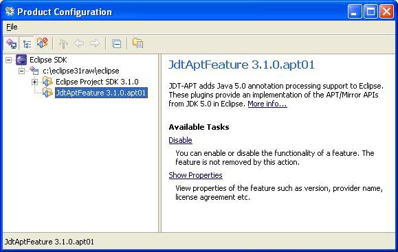

annotation processing in eclipse

| Introduction to the Annotation Processing Feature annotation processing in eclipse |
|
| Disclaimer | |||||||||||||
| This is an ALPHA release. All APIs contained herein are provisional, and subject to change with subsequent alpha updates. | |||||||||||||
| Installing APT | |||||||||||||
The APT feature can be used in Eclipse in one of two ways: you can check out the source from CVS
and build it yourself, or you can use the update site to install it into an existing Eclipse instance. Prerequisites for either
method are:
This page only contains instructions for using the update site. For build instructions, go here. Here are instructions for applying the update:
|
|||||||||||||
| Feature Enable/Disable | |||||||||||||
|
If you have a problem with the compiler and want to try eliminating APT, you can disable the feature through the Product Configuration dialog
(Menu item Help/Software Updates >/Manage Configuration).
 Select the JdtAptFeature from your Eclipse installation and click Disable. Your Eclipse will now use the unchanged, original version of the compiler. To re-enable the feature you need to click on the Show Disabled Features on the toolbar of this dialog. Problems and Bugs |
Symptom: message in Error Log view: "Could not load annotation processor xxxx" with NoClassDefFoundError for com.sun.mirror type.
|
Please post questions to the JDT newsgroup (eclipse.tools.jdt). Post bugs related to this feature in Bugzilla, under Product JDT, Component APT. Installing and Configuring
Annotation Processors |
An annotation processor can run in Eclipse from a .jar file contained in a project, a .jar file external to the workspace, or a plugin.
Jars are added to a workspace or project though the Properties Dialog, Factory Path pane:
|
For an example of how to set up a plugin project to develop a processor, download APTDemo.jar and explode it into a workspace and import it as an existing project. Eclipse locates plugins along a factory path, which can be configured at the workspace or project level. Workspace configuration is picked up as the default for projects that have annotation processing enabled (see the Properties dialog shown above). If the factory path is configured for an individual project, that project will no longer see changes to the workspace configuration; you will have to update it manually. A plugin that contains a factory must extend the annotationProcessorFactory extension point. Here is the example from the plugin in APTDemo.jar. Each Factory class contained in the plugin must be named in the class=attribute.
<extension
point="org.eclipse.jdt.apt.core.annotationProcessorFactory">
<factories enableDefault="true">
<factory
class="demo.TypeGeneratingAnnotationProcessorFactory">
</factory>
<factory
class="demo.DemoAnnotationProcessorFactory">
</factory>
</factories>
</extension>
More details about this will follow when we deliver an SDK version of the feature.
Debugging Annotation Processors in
Eclipse |
To debug an annotation processor it must be run from a plugin. You develop your code in the plugin, and then debug it by
annotating source code in a spawned instance of
Eclipse. The debugging instance needs the annotation declaration, the factory, and the processor. The spawned instance
only needs access to the delaration.
|
|